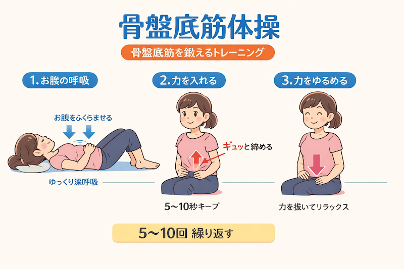

シリーズ：水分
公開日：2026年7月｜最終更新：2026年7月
第1章 はじめに
高齢者の頻尿は、加齢や病気によって起こることが多く、生活の質に影響します。
特に夜間の頻尿は睡眠の質を下げ、転倒のリスクを高めるため注意が必要です。
第2章 頻尿の目安
※「回数」よりも「困っているかどうか」が重要です。
第3章 頻尿の主な原因
１）加齢による変化
これら、加齢に伴う身体的な変化が原因になることが多いです。
２）病気
- 前立腺肥大（男性）
- 過活動膀胱
- 膀胱炎などの感染症
- 糖尿病・心不全・腎臓病
- 睡眠時無呼吸症候群
これら、治療が必要な疾患が原因になる場合もありますので、医療機関に相談されることをお勧めします。
３）その他
第4章 頻尿に対する対策
１）生活習慣
- 夕方以降の水分を控える、冷たい飲み物は避ける
- カフェイン・アルコールを減らす（利用作用あり）
- 排尿日誌をつける（4)に示しました）
- 骨盤底筋運動を行う（イメージ図参照）
- 膀胱訓練を行う（トイレに行かずに少し我慢で、容量を増やす）
- 睡眠を整える
- 食生活の改善する（減塩に心がける）
これらに注意することで、改善が期待できます。

２）医療
自己判断せずに、専門医に相談し、適切な診断と治療を受けてください。
３）安全対策
チェックシートを5)に示しました。特に、これに注意してください。
４）排尿日誌
| 時間 |
量（少・中・多） |
尿意（強・普通・弱） |
水分摂取（種類） |
メモ |
| 起床時 | | | | |
| 午前 | | | | |
| 昼 | | | | |
| 午後 | | | | |
| 夕方 | | | | |
| 就寝前 | | | | |
| 夜間 | | | | |
※細かく書く必要はありません。わかる範囲で大丈夫です。
・量：少し・普通・多い などでOKです
・尿意：急に行きたくなった（強い）／普通／なんとなく（弱い）
・水分：何をどのくらい飲んだか（例：お茶1杯など）
・メモ：気になったことを自由に書きましょう（体調・痛み・外出など）
５）夜間転倒予防チェック
夜間の転倒予防チェック
夜間頻尿は転倒の大きな原因になります。以下を確認して安全対策を行いましょう。
| チェック項目 |
確認 |
| 寝室からトイレまでの通路に物がない |
□ |
| 足元灯（ナイトライト）がある |
□ |
| スリッパが滑りにくい |
□ |
| 手すりが設置されている |
□ |
| トイレまでの距離が長すぎない |
□ |
| 寝る前に一度トイレに行っている |
□ |
| 夜間に急に立ち上がらない（ゆっくり動く） |
□ |
※1つでも不安があれば、環境を見直しましょう。
第5章 生活習慣病との関係
生活習慣病は、「頻尿」に深く関わっています。
- 糖尿病：尿量増加
- 高血圧：夜間頻尿
- 心不全：夜間の水分移動
- 睡眠時無呼吸：夜間頻尿
コラム：高血圧と夜間頻尿
高血圧では夜間に尿が増えることがあります。
塩分や水分の調整が大切です。
高血圧が続くと（専門的）
- 腎臓への影響：体内の塩分を排出しようと、血圧を上げる
- 心臓への影響：心機能の低下により、下半身に溜まった水分を排出する
- 睡眠の質の低下：肥満やメタボリックシンドロームがある場合、睡眠時無呼吸症候群により、また、夜間覚醒により、睡眠の質が低下する
- 降圧剤の影響：近年使われている利尿薬は、過度な頻尿につながることは少ない
- 対策：塩分摂取の調節、水分摂取の調節
夜間頻尿は、加齢によるものと放置されがちですが、これらの部位での病気が隠れている可能性もありますので、早めに医療機関に相談することをお勧めします。
第６章 尿の色
尿の色が普段と違う場合、体からの重要なサインである可能性があります。
| 色 |
原因 |
対応 |
| 薄い黄色 |
正常 |
問題なし |
| 赤 |
血尿 |
受診 |
| 濃い黄色 |
脱水 |
水分補給 |
| 透明 |
水分過多 |
様子を見る |
| 白濁 |
感染症 |
受診 |
| 黒 |
薬・出血 |
受診 |
第７章 まとめ
頻尿は加齢だけでなく、病気や生活習慣が関係します。
生活の見直しで改善することも多いため、気になる場合は早めに相談しましょう。
参考文献
- 日本排尿機能学会・日本泌尿器科学会 編：過活動膀胱診療ガイドライン 第3版（2022年）
- 日本排尿機能学会・日本泌尿器科学会 編：夜間頻尿診療ガイドライン 第2版（2020年）
- 日本泌尿器科学会 編：男性下部尿路症状・前立腺肥大症診療ガイドライン（最新版）
- 厚生労働省：健康情報・医療情報（e-ヘルスネット等）
※本ページは公的機関および学会の情報をもとに作成しています。